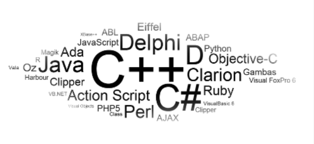
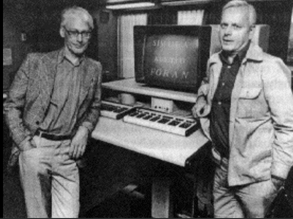
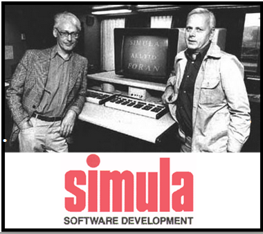
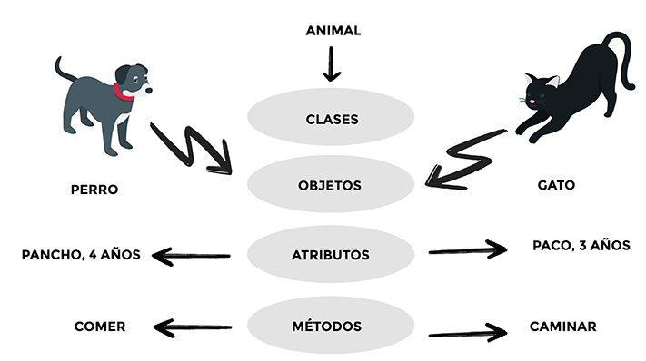
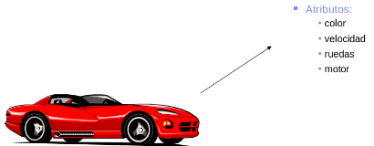

1-Programacion Orientado a Objetos
La revolucion en el mundo IT llego para quedarse, dar solucion y soporte a todos los problemas del futuro
Que es POO?

Llaman paradigmas de programación y entre ellos están la programación orientada a objetos (POO) y la programación estructurada.
La POO es una forma de programar que trata de encontrar una solución a estos problemas. Introduce nuevos conceptos, que superan y amplían conceptos antiguos ya conocidos.
La POO se fue convirtiendo en el estilo de programación dominante a mediados de los años 1980, en gran parte debido a la influencia de C++, una extensión del lenguaje de programación C. Su dominación fue consolidada gracias al auge de las interfaces gráficas de usuario, para las cuales la POO está particularmente bien adaptada. En este caso, se habla también de programación dirigida por eventos.
- Clase
- Atributos
- Objetos
- Metodos
- Eventos
Origenes de la Proramacion Orientada a Objetos?
Los conceptos de la POO tienen origen en Simula 67, un lenguaje diseñado para hacer simulaciones, creado por Ole-Johan Dahl y Kristen Nygaard, del Centro de Cómputo Noruego en Oslo. En este centro se trabajaba en simulaciones de naves, que fueron confundidas por la explosión combinatoria de cómo las diversas cualidades de diferentes naves podían afectar unas a las otras. La idea surgió al agrupar los diversos tipos de naves en diversas clases de objetos, siendo responsable cada clase de objetos de definir sus "propios" datos y comportamientos. Fueron refinados más tarde en Smalltalk, desarrollado en Simula en Xerox PARC (cuya primera versión fue escrita sobre Basic) pero diseñado para ser un sistema completamente dinámico en el cual los objetos se podrían crear y modificar "sobre la marcha" (en tiempo de ejecución) en lugar de tener un sistema basado en programas estáticos.
2-Caracteristicas!
Las características de orientación a objetos fueron agregadas a muchos lenguajes existentes durante ese tiempo, incluyendo Ada, BASIC, Lisp más Pascal, entre otros. La adición de estas características a los lenguajes que no fueron diseñados inicialmente para ellas condujo a menudo a problemas de compatibilidad y en la capacidad de mantenimiento del código. Los lenguajes orientados a objetos "puros", por su parte, carecían de las características de las cuales muchos programadores habían venido a depender. Para saltar este obstáculo, se hicieron muchas tentativas para crear nuevos lenguajes basados en métodos orientados a objetos, pero permitiendo algunas características imperativas de maneras "seguras". El lenguaje de programación Eiffel de Bertrand Meyer fue un temprano y moderadamente acertado lenguaje con esos objetivos, pero ahora ha sido esencialmente reemplazado por Java, en gran parte debido a la aparición de Internet y a la implementación de la máquina virtual Java en la mayoría de navegadores web. PHP en su versión 5 se ha modificado; soporta una orientación completa a objetos, cumpliendo todas las características propias de la orientación a objetos.
Los conceptos de la POO tienen origen en Simula 67, un lenguaje diseñado para hacer simulaciones, creado por Ole-Johan Dahl y Kristen Nygaard, del Centro de Cómputo Noruego en Oslo. En este centro se trabajaba en simulaciones de naves, que fueron confundidas por la explosión combinatoria de cómo las diversas cualidades de diferentes naves podían afectar unas a las otras. La idea surgió al agrupar los diversos tipos de naves en diversas clases de objetos, siendo responsable cada clase de objetos de definir sus "propios" datos y comportamientos. Fueron refinados más tarde en Smalltalk, desarrollado en Simula en Xerox PARC (cuya primera versión fue escrita sobre Basic) pero diseñado para ser un sistema completamente dinámico en el cual los objetos se podrían crear y modificar "sobre la marcha" (en tiempo de ejecución) en lugar de tener un sistema basado en programas estáticos.

Veamos como es Simula 67
El mensaje está codificado en el bloque de código de la clase Saludos. Este bloque de código se ejecuta solamente cuando existe una instancia o variable de tipo Saludos, lo que ocurre efectivamente al crear una instancia por medio de la instrucción New. En Simula, los objetos siempre son manejados por medio de referencias.
SIMULA 67 Ejemplo de bloque exterior: comienza la clase A; … separar; … ; referencia(A) U, V; U: - nueva A; bloque interior: comienza la clase B; … separar; … ; referencia (B) X; ref(A) W; V : - W : - nueva A; X: - nueva B; . . . computadora L: llamada (X); . . . bloque interior final; . . . llamada (V); . . . bloque exterior final; C SC 520 Principios de lenguajes de programación 20
Clases
Clase Una clase es una especie de "plantilla" en la que se definen los atributos y métodos predeterminados de un tipo de objeto. Esta plantilla se crea para poder crear objetos fácilmente. Al método de crear nuevos objetos mediante la lectura y recuperación de los atributos y métodos de una clase se le conoce como instanciación.
Objetos

Instancia de una clase. Entidad provista de un conjunto de propiedades o atributos (datos) y de comportamiento o funcionalidad (métodos), los mismos que consecuentemente reaccionan a eventos. Se corresponden con los objetos reales del mundo que nos rodea, o con objetos internos del sistema (del programa).
Metodos
Esta asociado a un objeto (o a una clase de objetos), cuya ejecución se desencadena tras la recepción de un "mensaje". Desde el punto de vista del comportamiento, es lo que el objeto puede hacer. Un método puede producir un cambio en las propiedades del objeto, o la generación de un "evento" con un nuevo mensaje para otro objeto del sistema.
Atributos

Los atributos son las características del objeto. Toman valores durante la vida del mismo. Estos valores determinan el estado del objeto. Cuando definimos un atributo se establece su nombre y su tipo. Los atributos suelen ser sustantivos. Marcan las propiedades del objeto. Una persona puede tener varios atributos. Además de las variables (y clases) definidas por Java, es posible agregar atributos propios, por ejemplo documento que hace referencia a la clase Documento. Los atributos se escriben con minúscula y si tuviesen palabras en el medio, éstas van con mayúscula: colorDeOjos.
Herencia

Herencia única: donde las subclases heredan las características de solo una superclase. Herencia Multinivel: una clase derivada heredará una clase base y, además, la clase derivada también actuará como la clase base de otra clase. Herencia Jerárquica: una clase sirve como una superclase (clase base) para más de una subclase. Herencia Múltiple (a través de interfaces): una clase puede tener más de una superclase y heredar características de todas las clases principales. Pero Java no admite herencia múltiple con clases, así que para lograrlo tenemos que usar Interfaces. Herencia Híbrida (a través de Interfaces): Es una mezcla de dos o más tipos de herencia anteriores. Como Java no admite herencia múltiple con clases, la herencia híbrida tampoco es posible con clases, pero como en el ejemplo anterior, podemos lograr el mismo resultado a través de Interfaces.
Han escrito comentarios
Han escrito comentarios